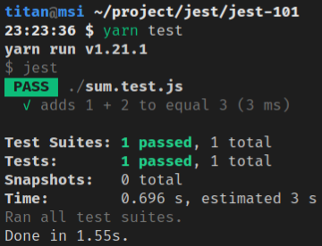

<!DOCTYPE html><html><head><meta charset="utf-8"><title>Jest：建置測試環境 (包含 Babel) | Titangene Blog</title><meta http-equiv="X-UA-Compatible" content="IE=edge"><meta name="viewport" content="width=device-width,initial-scale=1,maximum-scale=1"><meta name="HandheldFriendly" content="True"><meta name="apple-mobile-web-app-capable" content="yes"><meta name="author" content="Titangene"><link rel="shortcut icon" href="/favicon.ico"><link rel="alternate" href="/atom.xml" title="Titangene Blog"><meta name="description" content="最近在學習單元測試，而 Jest 是在前端蠻常見的測試框架，可透過建立測試來確保自己寫的程式碼是否符合需求，而且當改動程式碼時，才能確保是否因不小心而產生的 bug，測試能讓我更有信心的去重構程式碼。"><meta property="og:type" content="article"><meta property="og:title" content="Jest：建置測試環境 (包含 Babel)"><meta property="og:url" content="https://titangene.github.io/article/jest-build-test-env.html"><meta property="og:site_name" content="Titangene Blog"><meta property="og:description" content="最近在學習單元測試，而 Jest 是在前端蠻常見的測試框架，可透過建立測試來確保自己寫的程式碼是否符合需求，而且當改動程式碼時，才能確保是否因不小心而產生的 bug，測試能讓我更有信心的去重構程式碼。"><meta property="og:locale" content="zh_TW"><meta property="og:image" content="https://titangene.github.io/images/cover/jest.jpg"><meta property="article:published_time" content="2020-05-24T15:50:20.000Z"><meta property="article:modified_time" content="2020-06-28T14:07:43.421Z"><meta property="article:author" content="Titangene"><meta property="article:tag" content="w3HexSchool"><meta property="article:tag" content="Jest"><meta property="article:tag" content="JavaScript"><meta property="article:tag" content="Unit Testing"><meta property="article:tag" content="Node.js"><meta property="article:tag" content="Babel"><meta name="twitter:card" content="summary_large_image"><meta name="twitter:image" content="https://titangene.github.io/images/cover/jest.jpg"><meta name="twitter:creator" content="@titangeneTW"><meta name="twitter:site" content="@titangene_blog"><meta property="fb:admins" content="100001106016019"><meta property="fb:app_id" content="2470546159839111"><meta property="og:image:width" content="1200"><meta property="og:image:height" content="630"><meta name="google-site-verification" content="AaJ39L7h-nWwJjXJMhAMtXSF6H6BUgGWXC80kYvLic8"><link href="https://fonts.googleapis.com/css2?family=Roboto&display=swap" rel="stylesheet"><link href="https://fonts.googleapis.com/css?family=Source+Code+Pro&display=swap" rel="stylesheet"><link rel="stylesheet" href="https://cdnjs.cloudflare.com/ajax/libs/font-awesome/5.13.0/css/all.min.css"><link rel="stylesheet" href="https://unpkg.com/gitalk/dist/gitalk.css"><link rel="stylesheet" href="/style.css"><script async src="https://www.googletagmanager.com/gtag/js?id=UA-129758206-1"></script><script>!function(a){function n(){dataLayer.push(arguments)}a.dataLayer=a.dataLayer||[],n("js",new Date),n("config","UA-129758206-1")}(window)</script><script>function setLoadingBarProgress(e){document.getElementById("loading-bar").style.width=e+"%"}</script><meta name="generator" content="Hexo 4.2.0"><link rel="alternate" href="/atom.xml" title="Titangene Blog" type="application/atom+xml"></head></html><body><div id="loading-bar-wrapper"><div id="loading-bar"></div></div><script>setLoadingBarProgress(20)</script><header class="l_header"><div class="wrapper"><div class="nav-main container container--flex"><a class="logo flat-box" href="/">Titangene Blog</a><div class="menu"><ul class="h-list"><li><a class="flat-box nav-home" href="/">Home</a></li><li><a class="flat-box nav-archives" href="/archives">Archives</a></li></ul><div class="underline"></div></div><div class="m_search"><form name="searchform" class="form u-search-form"><input type="text" class="input u-search-input" placeholder="Search"> <i class="fas fa-search"></i></form></div><ul class="switcher h-list"><li class="s-search"><a class="fas fa-search" href="javascript:void(0)"></a></li><li class="s-menu"><a class="fas fa-bars" href="javascript:void(0)"></a></li></ul></div><div class="nav-sub container container--flex"><a class="logo flat-box" href="/">Titangene Blog</a><ul class="switcher h-list"><li class="s-comment"><a class="far fa-comment-alt" href="javascript:void(0)"></a></li><li class="s-top"><a class="fas fa-arrow-up" href="javascript:void(0)"></a></li><li class="s-toc"><a class="fas fa-list-ol" href="javascript:void(0)"></a></li></ul></div></div></header><aside class="menu-phone"><nav><a href="/" class="nav-home nav">Home </a><a href="/archives" class="nav-archives nav">Archives</a></nav></aside><script>setLoadingBarProgress(40)</script><div class="l_body"><div class="container clearfix"><div class="l_main"><article id="post-jest-build-test-env" class="post white-box article-type-post" itemscope itemprop="blogPost"><section class="meta"><h2 class="title"><a href="/article/jest-build-test-env.html">Jest：建置測試環境 (包含 Babel)</a></h2><span class="post-time"><span class="post-meta-item-icon"><i class="fa fa-calendar"></i> </span><span class="post-meta-item-text">發表於</span> <time title="建立時間：2020-05-24 23:50:20" itemprop="dateCreated datePublished" datetime="2020-05-24T23:50:20+08:00">2020-05-24 </time><span class="post-meta-divider">|</span> <span class="post-meta-item-icon"><i class="fa fa-calendar-check"></i> </span><span class="post-meta-item-text">更新於</span> <time title="修改時間：2020-06-28 22:07:43" itemprop="dateModified" datetime="2020-06-28T22:07:43+08:00">2020-06-28</time></span> <span class="comments-count"><span class="post-meta-divider">|</span> <span class="post-meta-item-icon"><i class="fas fa-comment"></i> </span><a href="https://titangene.github.io/article/jest-build-test-env.html#comments" class="article-comment-count">留言</a></span><div class="post-category"><span class="post-meta-item-icon"><i class="fa fa-folder"></i> </span><span class="post-meta-item-text">分類於</span> <span itemprop="about" itemscope itemtype="http://schema.org/Thing"><a href="/categories/testing/" itemprop="url" rel="index"><span itemprop="name">Testing</span></a></span></div></section><section class="toc-wrapper"><h3>目錄</h3><ol class="toc"><li class="toc-item toc-level-1"><a class="toc-link" href="#建立開發環境"><span class="toc-text">建立開發環境</span></a><ol class="toc-child"><li class="toc-item toc-level-2"><a class="toc-link" href="#建立-npm-專案"><span class="toc-text">建立 npm 專案</span></a></li><li class="toc-item toc-level-2"><a class="toc-link" href="#安裝-Jest"><span class="toc-text">安裝 Jest</span></a></li><li class="toc-item toc-level-2"><a class="toc-link" href="#設定-package-json"><span class="toc-text">設定 package.json</span></a></li></ol></li><li class="toc-item toc-level-1"><a class="toc-link" href="#寫範例程式碼"><span class="toc-text">寫範例程式碼</span></a></li><li class="toc-item toc-level-1"><a class="toc-link" href="#建立測試"><span class="toc-text">建立測試</span></a></li><li class="toc-item toc-level-1"><a class="toc-link" href="#執行測試"><span class="toc-text">執行測試</span></a></li><li class="toc-item toc-level-1"><a class="toc-link" href="#從指令列執行測試"><span class="toc-text">從指令列執行測試</span></a></li><li class="toc-item toc-level-1"><a class="toc-link" href="#Jest-Config"><span class="toc-text">Jest Config</span></a></li><li class="toc-item toc-level-1"><a class="toc-link" href="#使用-Babel"><span class="toc-text">使用 Babel</span></a></li></ol></section><section class="article typo"><div class="article-entry" itemprop="articleBody"><p></p><p>最近在學習單元測試，而 Jest 是在前端蠻常見的測試框架，可透過建立測試來確保自己寫的程式碼是否符合需求，而且當改動程式碼時，才能確保是否因不小心而產生的 bug，測試能讓我更有信心的去重構程式碼。</p><a id="more"></a><blockquote><p>其他 Jest 相關文章可參閱 <a href="https://titangene.github.io/tags/jest/">Jest 系列文章</a>。</p></blockquote><p>那 Jest 可以用在哪些專案？你可為下面這些專案建立測試：</p><ul><li><a href="https://babeljs.io/" target="_blank" rel="noopener">Babel</a></li><li><a href="https://www.typescriptlang.org/" target="_blank" rel="noopener">TypeScript</a></li><li><a href="https://nodejs.org/en/" target="_blank" rel="noopener">Node</a></li><li><a href="https://angular.io/" target="_blank" rel="noopener">Angular</a>、<a href="https://vuejs.org/" target="_blank" rel="noopener">Vue</a>、<a href="https://reactjs.org/" target="_blank" rel="noopener">React</a></li><li>…等</li></ul><p>下面來介紹如何建置 Jest 的測試開發環境。</p><h1 id="建立開發環境"><a class="header-anchor" href="#建立開發環境"></a>建立開發環境</h1><h2 id="建立-npm-專案"><a class="header-anchor" href="#建立-npm-專案"></a>建立 npm 專案</h2><figure class="highlight shell"><table><tr><td class="gutter"><pre><span class="line">1</span><br></pre></td><td class="code"><pre><code class="hljs shell"><span class="hljs-meta">$</span><span class="bash"> npm init -y</span><br></code></pre></td></tr></table></figure><h2 id="安裝-Jest"><a class="header-anchor" href="#安裝-Jest"></a>安裝 Jest</h2><figure class="highlight shell"><table><tr><td class="gutter"><pre><span class="line">1</span><br></pre></td><td class="code"><pre><code class="hljs shell"><span class="hljs-meta">$</span><span class="bash"> yarn add -D jest</span><br></code></pre></td></tr></table></figure><p>或</p><figure class="highlight shell"><table><tr><td class="gutter"><pre><span class="line">1</span><br></pre></td><td class="code"><pre><code class="hljs shell"><span class="hljs-meta">$</span><span class="bash"> npm install -D jest</span><br></code></pre></td></tr></table></figure><h2 id="設定-package-json"><a class="header-anchor" href="#設定-package-json"></a>設定 <code>package.json</code></h2><p>在 <code>package.json</code> 加上下面內容：</p><figure class="highlight json"><table><tr><td class="gutter"><pre><span class="line">1</span><br><span class="line">2</span><br><span class="line">3</span><br><span class="line">4</span><br><span class="line">5</span><br></pre></td><td class="code"><pre><code class="hljs json">&#123;<br>  <span class="hljs-attr">"scripts"</span>: &#123;<br>    <span class="hljs-attr">"test"</span>: <span class="hljs-string">"jest"</span><br>  &#125;<br>&#125;<br></code></pre></td></tr></table></figure><h1 id="寫範例程式碼"><a class="header-anchor" href="#寫範例程式碼"></a>寫範例程式碼</h1><figure class="highlight javascript"><table><tr><td class="gutter"><pre><span class="line">1</span><br><span class="line">2</span><br><span class="line">3</span><br><span class="line">4</span><br><span class="line">5</span><br></pre></td><td class="code"><pre><code class="hljs javascript"><span class="hljs-comment">// sum.js</span><br><span class="hljs-function"><span class="hljs-keyword">function</span> <span class="hljs-title">sum</span>(<span class="hljs-params">a, b</span>) </span>&#123;<br>  <span class="hljs-keyword">return</span> a + b;<br>&#125;<br><span class="hljs-built_in">module</span>.exports = sum;<br></code></pre></td></tr></table></figure><figure class="highlight javascript"><table><tr><td class="gutter"><pre><span class="line">1</span><br><span class="line">2</span><br><span class="line">3</span><br><span class="line">4</span><br></pre></td><td class="code"><pre><code class="hljs javascript"><span class="hljs-comment">// main.js</span><br><span class="hljs-keyword">const</span> sum = <span class="hljs-built_in">require</span>(<span class="hljs-string">'./sum'</span>);<br><br><span class="hljs-built_in">console</span>.log(sum(<span class="hljs-number">1</span>, <span class="hljs-number">2</span>));<br></code></pre></td></tr></table></figure><p>執行 <code>main.js</code>：</p><figure class="highlight shell"><table><tr><td class="gutter"><pre><span class="line">1</span><br><span class="line">2</span><br></pre></td><td class="code"><pre><code class="hljs shell"><span class="hljs-meta">$</span><span class="bash"> node main.js</span><br>3<br></code></pre></td></tr></table></figure><h1 id="建立測試"><a class="header-anchor" href="#建立測試"></a>建立測試</h1><figure class="highlight javascript"><table><tr><td class="gutter"><pre><span class="line">1</span><br><span class="line">2</span><br><span class="line">3</span><br><span class="line">4</span><br><span class="line">5</span><br><span class="line">6</span><br><span class="line">7</span><br><span class="line">8</span><br><span class="line">9</span><br><span class="line">10</span><br><span class="line">11</span><br><span class="line">12</span><br><span class="line">13</span><br><span class="line">14</span><br></pre></td><td class="code"><pre><code class="hljs javascript"><span class="hljs-comment">// sum.test.js</span><br><span class="hljs-keyword">const</span> sum = <span class="hljs-built_in">require</span>(<span class="hljs-string">'./sum'</span>);<br><br>test(<span class="hljs-string">'adds 1 + 2 to equal 3'</span>, () =&gt; &#123;<br>  <span class="hljs-comment">// Arrange</span><br>  <span class="hljs-keyword">let</span> x = <span class="hljs-number">1</span>, y = <span class="hljs-number">2</span>;<br>  <span class="hljs-keyword">let</span> expected = <span class="hljs-number">3</span>;<br><br>  <span class="hljs-comment">// Act</span><br>  <span class="hljs-keyword">let</span> actual = sum(x, y);<br><br>  <span class="hljs-comment">// Assert</span><br>  expect(actual).toBe(expected);<br>&#125;);<br></code></pre></td></tr></table></figure><h1 id="執行測試"><a class="header-anchor" href="#執行測試"></a>執行測試</h1><figure class="highlight shell"><table><tr><td class="gutter"><pre><span class="line">1</span><br></pre></td><td class="code"><pre><code class="hljs shell"><span class="hljs-meta">$</span><span class="bash"> yarn <span class="hljs-built_in">test</span></span><br></code></pre></td></tr></table></figure><p>或</p><figure class="highlight shell"><table><tr><td class="gutter"><pre><span class="line">1</span><br></pre></td><td class="code"><pre><code class="hljs shell"><span class="hljs-meta">$</span><span class="bash"> npm run <span class="hljs-built_in">test</span></span><br></code></pre></td></tr></table></figure><p>測試通過：</p><p></p><h1 id="從指令列執行測試"><a class="header-anchor" href="#從指令列執行測試"></a>從指令列執行測試</h1><p>例如：Jest 只執行 match <code>my-test</code> 的測試檔案，以及使用 <code>config.json</code> 作為配置檔案，並且在執行後顯示 native 的 OS 通知：</p><figure class="highlight shell"><table><tr><td class="gutter"><pre><span class="line">1</span><br></pre></td><td class="code"><pre><code class="hljs shell"><span class="hljs-meta">$</span><span class="bash"> jest my-test --notify --config=config.json</span><br></code></pre></td></tr></table></figure><p>Jest CLI option 說明：</p><ul><li><code>jest &lt;regexForTestFiles&gt;</code>：match 到名為 <code>&lt;regexForTestFiles&gt;</code> (像此範例的 <code>my-test</code> ) 的檔案執行 Jest<ul><li>若在執行 <code>jest</code> 時使用了 <code>&lt;regexForTestFiles&gt;</code> argument，該 argument 會被視為 regex pattern，Jest 只會執行與 pattern match 的測試檔案</li><li>有些 terminal 可能需要用引號把 argument 包起來，例如：<code>jest &quot;my.*(complex)?pattern&quot;</code></li><li>Windows 需使用 <code>/</code> 作為路徑分隔字元 (separator) 或將 <code>\</code> 轉義 (escape) 成 <code>\\</code></li></ul></li><li><code>--config=&lt;path&gt;</code>，<code>-c=&lt;path&gt;</code>：使用 <code>&lt;path&gt;</code> (像此範例的 <code>config.json</code> ) 作為配置檔案<ul><li>Jest 配置檔案的路徑來指定如何查找和執行測試</li><li>如果在配置中未設定 <code>rootDir</code>，則假定包含配置檔案的目錄為專案的 <code>rootDir</code></li><li>也可以是 JSON-encoded value 作為 Jest 的配置</li></ul></li><li><code>--notify</code>：執行完成後顯示原生的 OS 通知<ul><li>激活 (activates) 測試結果通知</li><li>當你不希望自己的意識能夠專注於 JavaScript 測試以外的任何事物時，可用此 option</li><li>Beware：Jest 使用 <a href="https://github.com/mikaelbr/node-notifier" target="_blank" rel="noopener">node-notifier</a> 來顯示桌面通知<ul><li>在 Windows 上，它在第一次使用時會建立一個新的 start menu entry，並且不會顯示通知。通知將在後續執行中正確顯示</li></ul></li></ul></li></ul><h1 id="Jest-Config"><a class="header-anchor" href="#Jest-Config"></a>Jest Config</h1><p>使用下面指令生成 Jest 的基礎配置檔案 <code>jest.config.js</code>：</p><figure class="highlight shell"><table><tr><td class="gutter"><pre><span class="line">1</span><br></pre></td><td class="code"><pre><code class="hljs shell"><span class="hljs-meta">$</span><span class="bash"> jest --init</span><br></code></pre></td></tr></table></figure><p>因為我沒有在 global 安裝 <code>jest</code>，所以需要透過 <code>yarn</code> 來執行 Jest CLI (或是可透過 <code>npx</code> 來執行)：</p><figure class="highlight shell"><table><tr><td class="gutter"><pre><span class="line">1</span><br><span class="line">2</span><br><span class="line">3</span><br><span class="line">4</span><br><span class="line">5</span><br><span class="line">6</span><br><span class="line">7</span><br><span class="line">8</span><br><span class="line">9</span><br><span class="line">10</span><br><span class="line">11</span><br><span class="line">12</span><br></pre></td><td class="code"><pre><code class="hljs shell"><span class="hljs-meta">$</span><span class="bash"> yarn <span class="hljs-built_in">test</span> --init</span><br>yarn run v1.21.1<br><span class="hljs-meta">$</span><span class="bash"> jest --init</span><br><br>The following questions will help Jest to create a suitable configuration for your project<br><br>✔ Choose the test environment that will be used for testing › node<br>✔ Do you want Jest to add coverage reports? … yes<br>✔ Automatically clear mock calls and instances between every test? … no<br><br>📝  Configuration file created at /home/titan/.local/share/Trash/files/jest.config.js<br>Done in 7.41s.<br></code></pre></td></tr></table></figure><p>第一個問題我選擇 <code>node</code>：</p><figure class="highlight shell"><table><tr><td class="gutter"><pre><span class="line">1</span><br><span class="line">2</span><br><span class="line">3</span><br></pre></td><td class="code"><pre><code class="hljs shell">? Choose the test environment that will be used for testing › - Use arrow-keys. Return to submit.<br>❯   node<br>    jsdom (browser-like)<br></code></pre></td></tr></table></figure><p>第二個問題：是否要測試涵蓋報告 (coverage reports)？我選擇 <code>yes</code>：</p><figure class="highlight shell"><table><tr><td class="gutter"><pre><span class="line">1</span><br></pre></td><td class="code"><pre><code class="hljs shell">? Do you want Jest to add coverage reports? › (y/N)<br></code></pre></td></tr></table></figure><p>第三個問題：是否要在每個測試之間自動清除 mock calls 和 instance？我選擇 <code>No</code>：</p><figure class="highlight shell"><table><tr><td class="gutter"><pre><span class="line">1</span><br></pre></td><td class="code"><pre><code class="hljs shell">? Automatically clear mock calls and instances between every test? › (y/N)<br></code></pre></td></tr></table></figure><p>下面是剛剛執行 <code>jest init</code> 時，所生成的 <code>jest.config.js</code> 設定：</p><ul><li><code>coverageDirectory</code>：Jest 輸出的 coverage 檔案要放在哪個目錄<ul><li>預設：<code>undefined</code></li></ul></li><li><code>testEnvironment</code>：用於測試的測試環境<ul><li>預設：<code>&quot;jsdom&quot;</code> (類似瀏覽器的環境)</li><li>若要建置 node service，可用 <code>&quot;node&quot;</code> 來使用類似 node 的環境</li></ul></li></ul><figure class="highlight javascript"><table><tr><td class="gutter"><pre><span class="line">1</span><br><span class="line">2</span><br><span class="line">3</span><br><span class="line">4</span><br></pre></td><td class="code"><pre><code class="hljs javascript"><span class="hljs-built_in">module</span>.exports = &#123;<br>  coverageDirectory: <span class="hljs-string">"coverage"</span>,<br>  testEnvironment: <span class="hljs-string">"node"</span><br>&#125;;<br></code></pre></td></tr></table></figure><blockquote><p>更多 Jest 配置設定，詳情可參閱 <a href="https://jestjs.io/docs/en/configuration" target="_blank" rel="noopener">Configuring Jest · Jest</a>。</p></blockquote><h1 id="使用-Babel"><a class="header-anchor" href="#使用-Babel"></a>使用 Babel</h1><p>在安裝 Babel 前，將程式碼改成 ES6 語法：</p><figure class="highlight javascript"><table><tr><td class="gutter"><pre><span class="line">1</span><br><span class="line">2</span><br><span class="line">3</span><br></pre></td><td class="code"><pre><code class="hljs javascript"><span class="hljs-comment">// sum.js</span><br><span class="hljs-keyword">const</span> sum = <span class="hljs-function">(<span class="hljs-params">a, b</span>) =&gt;</span> a + b;<br><span class="hljs-keyword">export</span> <span class="hljs-keyword">default</span> sum;<br></code></pre></td></tr></table></figure><figure class="highlight javascript"><table><tr><td class="gutter"><pre><span class="line">1</span><br><span class="line">2</span><br><span class="line">3</span><br><span class="line">4</span><br></pre></td><td class="code"><pre><code class="hljs javascript"><span class="hljs-comment">// main.js</span><br><span class="hljs-keyword">import</span> sum <span class="hljs-keyword">from</span> <span class="hljs-string">'./sum'</span>;<br><br><span class="hljs-built_in">console</span>.log(sum(<span class="hljs-number">1</span>, <span class="hljs-number">2</span>));<br></code></pre></td></tr></table></figure><figure class="highlight javascript"><table><tr><td class="gutter"><pre><span class="line">1</span><br><span class="line">2</span><br><span class="line">3</span><br><span class="line">4</span><br><span class="line">5</span><br><span class="line">6</span><br><span class="line">7</span><br><span class="line">8</span><br><span class="line">9</span><br><span class="line">10</span><br><span class="line">11</span><br><span class="line">12</span><br><span class="line">13</span><br><span class="line">14</span><br></pre></td><td class="code"><pre><code class="hljs javascript"><span class="hljs-comment">// sum.test.js</span><br><span class="hljs-keyword">import</span> sum <span class="hljs-keyword">from</span> <span class="hljs-string">'./sum'</span>;<br><br>test(<span class="hljs-string">'adds 1 + 2 to equal 3'</span>, () =&gt; &#123;<br>  <span class="hljs-comment">// Arrange</span><br>  <span class="hljs-keyword">let</span> x = <span class="hljs-number">1</span>, y = <span class="hljs-number">2</span>;<br>  <span class="hljs-keyword">let</span> expected = <span class="hljs-number">3</span>;<br><br>  <span class="hljs-comment">// Act</span><br>  <span class="hljs-keyword">let</span> actual = sum(x, y);<br><br>  <span class="hljs-comment">// Assert</span><br>  expect(actual).toBe(expected);<br>&#125;);<br></code></pre></td></tr></table></figure><p>跑測試會出錯，因為 Jest 需要透過 Babel 才能執行 ES6 的語法：</p><figure class="highlight shell"><table><tr><td class="gutter"><pre><span class="line">1</span><br></pre></td><td class="code"><pre><code class="hljs shell"><span class="hljs-meta">$</span><span class="bash"> yarn <span class="hljs-built_in">test</span></span><br></code></pre></td></tr></table></figure><p></p><p>所以來安裝 <a href="http://babeljs.io/" target="_blank" rel="noopener">Babel</a>：</p><figure class="highlight shell"><table><tr><td class="gutter"><pre><span class="line">1</span><br></pre></td><td class="code"><pre><code class="hljs shell"><span class="hljs-meta">$</span><span class="bash"> yarn add -D babel-jest @babel/core @babel/preset-env</span><br></code></pre></td></tr></table></figure><p>在專案根目錄建立 <code>babel.config.js</code>，此檔案用於配置與你當前 Node 版本相容的 Babel：</p><figure class="highlight javascript"><table><tr><td class="gutter"><pre><span class="line">1</span><br><span class="line">2</span><br><span class="line">3</span><br><span class="line">4</span><br><span class="line">5</span><br><span class="line">6</span><br><span class="line">7</span><br><span class="line">8</span><br><span class="line">9</span><br><span class="line">10</span><br><span class="line">11</span><br><span class="line">12</span><br><span class="line">13</span><br></pre></td><td class="code"><pre><code class="hljs javascript"><span class="hljs-comment">// babel.config.js</span><br><span class="hljs-built_in">module</span>.exports = &#123;<br>  presets: [<br>    [<br>      <span class="hljs-string">'@babel/preset-env'</span>,<br>      &#123;<br>        targets: &#123;<br>          node: <span class="hljs-string">'current'</span>,<br>        &#125;,<br>      &#125;,<br>    ],<br>  ],<br>&#125;;<br></code></pre></td></tr></table></figure><p>再跑測試就會通過：</p><figure class="highlight shell"><table><tr><td class="gutter"><pre><span class="line">1</span><br></pre></td><td class="code"><pre><code class="hljs shell"><span class="hljs-meta">$</span><span class="bash"> yarn <span class="hljs-built_in">test</span></span><br></code></pre></td></tr></table></figure><p></p><blockquote><p>詳情可參閱 <a href="https://babeljs.io/docs/en/" target="_blank" rel="noopener">Babel 官方文件</a>。</p></blockquote><p>資料來源：</p><ul><li><a href="https://jestjs.io/docs/en/getting-started" target="_blank" rel="noopener">Getting Started · Jest</a></li><li><a href="https://jestjs.io/docs/en/cli" target="_blank" rel="noopener">Jest CLI Options · Jest</a></li><li><a href="https://jestjs.io/docs/en/configuration" target="_blank" rel="noopener">Configuring Jest · Jest</a></li></ul></div><div class="article-tags tags"><a href="/tags/w3hexschool/" title="w3HexSchool">w3HexSchool</a> <a href="/tags/jest/" title="Jest">Jest</a> <a href="/tags/javascript/" title="JavaScript">JavaScript</a> <a href="/tags/unit-testing/" title="Unit Testing">Unit Testing</a> <a href="/tags/node-js/" title="Node.js">Node.js</a> <a href="/tags/babel/" title="Babel">Babel</a></div></section><div class="article-share-links"><span>分享：</span> <a class="fab fa-facebook-f" title="Facebook" target="_blank" href="javascript:window.open('https://www.facebook.com/sharer.php?u=https%3A%2F%2Ftitangene.github.io%2Farticle%2Fjest-build-test-env.html', 'Share on Facebook','width=600, height=600')"></a> <a class="fab fa-twitter" title="Twitter" target="_blank" href="javascript:window.open('https://twitter.com/share?url=https%3A%2F%2Ftitangene.github.io%2Farticle%2Fjest-build-test-env.html&amp;text=Jest：建置測試環境 (包含 Babel)&amp;hashtags=w3HexSchool,Jest,JavaScript,UnitTesting,Node.js,Babel&amp;via=titangene_blog', 'Share on Twitter','width=600, height=260')"></a> <a class="fab fa-linkedin-in" title="Linkedin" target="_blank" href="javascript:window.open('https://www.linkedin.com/shareArticle?mini=true&amp;url=https%3A%2F%2Ftitangene.github.io%2Farticle%2Fjest-build-test-env.html&amp;title=Jest：建置測試環境 (包含 Babel)', 'Share on Linkedin','width=600, height=600')"></a> <a class="fab fa-facebook-messenger" title="Facebook Messenger" target="_blank" href="javascript:window.open('http://www.facebook.com/dialog/send?app_id=2470546159839111&amp;link=https%3A%2F%2Ftitangene.github.io%2Farticle%2Fjest-build-test-env.html&amp;display=popup&amp;redirect_uri=https%3A%2F%2Fwww.facebook.com%2Fdialog%2Freturn%2Fclose%23_%3D_', 'Send in Messenger','width=600, height=600')"></a> <a class="fab fa-telegram-plane" href="https://telegram.me/share/url?url=https%3A%2F%2Ftitangene.github.io%2Farticle%2Fjest-build-test-env.html&text=Jest：建置測試環境 (包含 Babel)" target="_blank"></a></div><nav id="article-nav"><a href="/article/sass-import-rule.html" id="article-nav-prev" class="article-nav-link-wrap" title="Sass：@import rule" rel="prev"><strong class="article-nav-caption">Prev</strong><p class="article-nav-title">Sass：@import rule</p><i class="fas fa-angle-left"></i> </a><a href="/article/jest-typescript.html" id="article-nav-next" class="article-nav-link-wrap" title="Jest + TypeScript：建置測試環境" rel="next"><strong class="article-nav-caption">Next</strong><p class="article-nav-title">Jest + TypeScript：建置測試環境</p><i class="fas fa-angle-right"></i></a></nav><section id="list_related_posts"><h2>相關文章</h2><ul class="related-posts"><li class="related-posts-item"><a class="related-posts-link" href="/article/jest-jquery-dom-testing.html">Jest：DOM 測試 (jQuery)</a><div class="related-posts-item-abstract">若用 Jest 來測試直接操作 DOM 的程式碼，最大好處是不用安裝額外的套件就可以測試，因為 Jest 附帶了 jsdom，它是用來模擬 DOM 環境，讓你很像在瀏覽器上呼叫 DOM API，進而觀察 DOM 的操作是</div></li><li class="related-posts-item"><a class="related-posts-link" href="/article/jest-describe-test-case.html">Jest：Describe & Test case</a><div class="related-posts-item-abstract">上次介紹了 Jest 提供的 matcher，可讓你驗證程式碼是否符合預期，而這次來說明如何透過 describe 和 test 區塊來組織測試案例。當需求變多時，可針對需求來分類測試案例，將相關的測試放在同一個群組區塊</div></li><li class="related-posts-item"><a class="related-posts-link" href="/article/jest-manual-mocks.html">Jest：Manual Mocks</a><div class="related-posts-item-abstract">manual mock 是用於透過 mock 資料來對功能進行 stub out。例如：若你不想存取網站或 DB 之類的遠端資源，可能需要使用 fake data 來 manual mock 這些功能，以確保可以快速測試</div></li><li class="related-posts-item"><a class="related-posts-link" href="/article/jest-typescript.html">Jest + TypeScript：建置測試環境</a><div class="related-posts-item-abstract">TypeScript 是 JavaScript 的 typed superset，提供強大的型別檢查系統，讓你在編譯時期就能即時發現錯誤，而不是到了 runtime 才發生未知的 bug。上次介紹了 Jest + Bab</div></li><li class="related-posts-item"><a class="related-posts-link" href="/article/jest-timer-mocks.html">Jest：Timer Mocks</a><div class="related-posts-item-abstract">常用的 native timer 包括 setTimeout、setInterval、clearTimeout、clearInterval 等，用到這些 timer 的函數可以說是依賴於真實流逝的時間。如果 timer</div></li><li class="related-posts-item"><a class="related-posts-link" href="/article/jest-mock-function.html">Jest：Mock 函數</a><div class="related-posts-item-abstract">Jest 提供的 mock 函數可讓你自行決定要 mock 到什麼程度，並且可讓你在呼叫該 mock 函數之後，捕捉呼叫的次數、傳入的參數、使用 new 實例化的 instance，以及你指定要回傳的值，我們可透過這些資</div></li></ul></section><section class="comments" id="comments"><h2>討論區</h2><div id="gitalk-container"></div></section></article><script>window.subData={title:"Jest：建置測試環境 (包含 Babel)",tools:!0}</script></div><aside class="l_side"><section class="m_widget about"><div class="avatar-section"><style>.avatar-cover{background:url(/images/avatar_cover.jpg) 0 10%/cover no-repeat}</style><div class="avatar-cover"></div></div><div class="header">Titangene</div><div class="content"><div class="desc">利用 blog 紀錄學習歷程</div></div><div class="content"><meta itemprop="url" content="https://titangene.github.io"><div class="social-wrapper"><a itemprop="sameAs" href="https://github.com/titangene" class="social github" target="_blank" rel="external"><span class="fab fa-github-alt"></span> </a><a itemprop="sameAs" href="https://www.facebook.com/titangene.tw" class="social facebook" target="_blank" rel="external"><span class="fab fa-facebook-square"></span> </a><a itemprop="sameAs" href="https://www.instagram.com/titangene/" class="social instagram" target="_blank" rel="external"><span class="fab fa-instagram"></span> </a><a itemprop="sameAs" href="https://www.flickr.com/photos/titangene" class="social flickr" target="_blank" rel="external"><span class="fab fa-flickr"></span> </a><a itemprop="sameAs" href="/atom.xml" class="social rss" target="_blank" rel="external"><span class="fas fa-rss"></span></a></div></div></section><section class="m_widget facebook_page"><div class="fb-page" data-href="https://www.facebook.com/titangene.blog/" data-width="250" data-small-header="false" data-adapt-container-width="false" data-hide-cover="false" data-show-facepile="true"><blockquote cite="https://www.facebook.com/titangene.blog/" class="fb-xfbml-parse-ignore"><p><a href="https://www.facebook.com/titangene.blog/" class="social facebook" target="_blank"><span class="fab fa-facebook-square"></span></a></p><p><a href="https://www.facebook.com/titangene.blog/" target="_blank" rel="noopener">Titangene Blog</a></p><p>Loading...</p></blockquote></div></section><section class="m_widget recent"><div class="header">Recents</div><div class="content"><ul class="entry"><li><a itemprop="url" class="flat-box" href="/article/recommend-chrome-extension-4.html"><time>2020-08-30</time><div class="name">推薦 Chrome Extension：翻譯篇 - 新同文堂</div></a></li><li><a itemprop="url" class="flat-box" href="/article/recommend-chrome-extension-3.html"><time>2020-08-23</time><div class="name">推薦 Chrome Extension：YouTube 篇</div></a></li><li><a itemprop="url" class="flat-box" href="/article/recommend-chrome-extension-2.html"><time>2020-08-16</time><div class="name">推薦 Chrome Extension：新分頁篇</div></a></li><li><a itemprop="url" class="flat-box" href="/article/recommend-chrome-extension-1.html"><time>2020-08-09</time><div class="name">推薦 Chrome Extension：Markdown &amp; 頁面主題篇</div></a></li><li><a itemprop="url" class="flat-box" href="/article/jest-jquery-dom-testing.html"><time>2020-08-02</time><div class="name">Jest：DOM 測試 (jQuery)</div></a></li><li><a itemprop="url" class="flat-box" href="/article/jest-manual-mocks.html"><time>2020-07-26</time><div class="name">Jest：Manual Mocks</div></a></li><li><a itemprop="url" class="flat-box" href="/article/jest-timer-mocks.html"><time>2020-07-19</time><div class="name">Jest：Timer Mocks</div></a></li></ul></div></section></aside><script>setLoadingBarProgress(60)</script></div></div><footer id="footer" class="clearfix"><div class="social-wrapper"><a href="https://github.com/titangene" class="social github" target="_blank" rel="external"><span class="fab fa-github-alt"></span> </a><a href="https://www.facebook.com/titangene.tw" class="social facebook" target="_blank" rel="external"><span class="fab fa-facebook-square"></span> </a><a href="https://www.instagram.com/titangene/" class="social instagram" target="_blank" rel="external"><span class="fab fa-instagram"></span> </a><a href="https://www.flickr.com/photos/titangene" class="social flickr" target="_blank" rel="external"><span class="fab fa-flickr"></span> </a><a href="/atom.xml" class="social rss" target="_blank" rel="external"><span class="fas fa-rss"></span></a></div><div>© 2018 - 2020 <span itemprop="copyrightHolder">Titangene</span></div><div>Powered by <a href="https://hexo.io/" target="_blank" class="codename" rel="external noopener">Hexo</a> - Theme <a href="https://github.com/stkevintan/hexo-theme-material-flow" target="_blank" class="codename" rel="external noopener">MaterialFlow</a></div><div><a rel="license noopener" href="http://creativecommons.org/licenses/by-nc-sa/4.0/" target="_blank" rel="external noopener"></a></div></footer><script>setLoadingBarProgress(80)</script><script src="//cdnjs.cloudflare.com/ajax/libs/jquery/2.1.4/jquery.min.js"></script><script src="https://cdnjs.cloudflare.com/ajax/libs/clipboard.js/2.0.0/clipboard.min.js"></script><script src="https://unpkg.com/gitalk/dist/gitalk.min.js"></script><script src="/js/jquery.fitvids.js"></script><script>var SEARCH_SERVICE="hexo",ROOT="/";ROOT.endsWith("/")||(ROOT+="/")</script><script src="/js/search.js"></script><script src="/js/app.js"></script><script src="/js/clipboard-use.js"></script><script type="text/javascript">var gitalk=new Gitalk({clientID:"dd1684f31ee17e25c22b",clientSecret:"4b51bb4a5996b04d58821a6e3da8558f23da4cdf",id:window.location.pathname,repo:"hexo-blog",owner:"titangene",admin:"titangene",distractionFreeMode:"true"});gitalk.render("gitalk-container")</script><div id="fb-root"></div><script>window.fbAsyncInit=function(){FB.init({appId:"2470546159839111",autoLogAppEvents:!0,xfbml:!0,version:"v2.11"}),FB.AppEvents.logPageView()},function(e,n,t){var o,s=e.getElementsByTagName(n)[0];e.getElementById(t)||((o=e.createElement(n)).id=t,o.src="//connect.facebook.net/zh_TW/sdk.js",s.parentNode.insertBefore(o,s))}(document,"script","facebook-jssdk")</script><script>setLoadingBarProgress(100)</script></body>